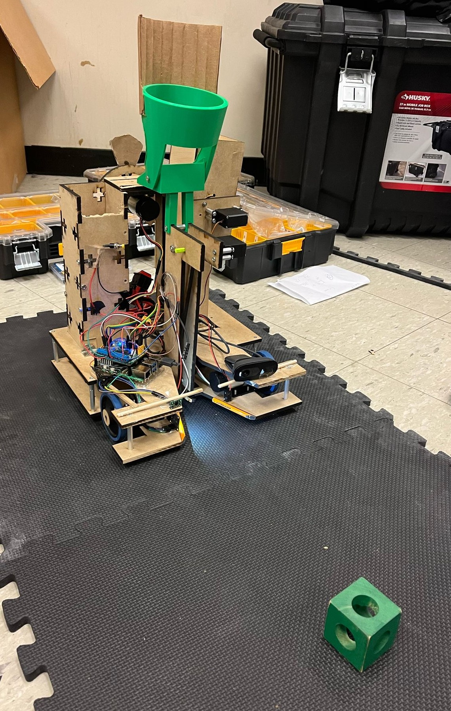

Advanced Rock Display
Advanced Rock Display
Purpose: Gift
Date: February 2025
In the span of three days, I modeled and constructed a box to display rocks. Inside, there is a pressure sensor that detects if there is an object inside and sends a message to an Arduino. The Arduino, in turn, tells an LED ring hidden under the bottom platform to turn on with specific color and pattern settings. The Arduino also has a digital display with a set of buttons. These buttons can be used to control the LED's and can bring up a pre-programmed text description of the rock inside.
|
|
Automatic Drink Mixer
Automatic Drink Mixer
Purpose: Formlabs hackathon
Date: January 2025
I worked in a team of five to build a machine that dispenses liquids from a set of eight containers. It has a digital touchscreen connected to a raspberri pi, which allows you to select a mixed drink. The pi then performs fluid dynamic equations to calculate how long it should turn each valve to obtain precise quantities of each liquid. I worked primarily on the electronics, wiring each valve to a set of transistors to control the 12 volt valves through the pi's gpio pins. I also worked on the programming for the digital display raspberri pi.
|
|
Mobile Autonomous Systems Laboratory
Mobile Autonomous Systems Laboratory
Purpose: Project for month long class
Date: January 2025
I worked in a team of three to build a robot that detects, picks up, and sorts green and red blocks in an autonomous matter. I led the electrical and programming component of the project. I wired up a set of PID motor encoders, time-of-flight sensors, color sensors, and servos to a raspberri Pi, which I controlled through an SSH terminal. As for the programming, I tuned the PID controllers, trained a 1080p camera to detect green and red blocks, and used homography techniques to calculate the distance and position of those blocks. Additionally, I programmed a complex game state to allow the robot continously search and pick up blocks for the duration of the game.


|
|
Computation Structures Design Project
Computation Structures Design Project
Purpose: Final Project for the Computational Structures class
Date: December 2024
I programmed my own pipelined processor using Risk V assmebly in a low-level programming language called minispec. The processor takes a 32 bit input, decodes it into an instruction according to the format of Risk V assembly, executes the function, returns the information and writes to memory if necessary. I then used it to optimize an MNIST-dataset neural network inference engine. This allowed me to reduce the total runtime from over 20 Million nanoseconds to 269 thousand nanoseconds.

|
|
Domino Bot
Domino Bot
Purpose: Personal project
Date: December 2024
I designed a bot that can play traditional dominoes. It contains one DC motor controlled by an esp32 board. The board sends inputs to an h-bridge that rotates a custom 3d printed lead screw, moving the second motor forwards and backwards to select which domino to knock over. The second motor is a standard servo motor that knocks over the selected domino when given an input from the esp32. When combined with an algorithm that finds the optimal play given any domino board, it can play dominos almost fully autonomously.
|
|
Blade-less turbine
Blade-less turbine
Purpose: Summer research project
Term: Summer 2024
For my internship of summer 2024, I designed and assembled a blade-less water/air turbine. It uses induced vortices in water/air currents to perpetuate motion in a system of harmonic oscillation with magnets. The kinetic energy from this oscillation can be harnessed and converted into electrical power. It is a preferable alternative to blade turbines, since it is projected to be significantly less harmful for any ecosystem in comparison to blade turbines.
|
|
Figurine of Steve from "Minecraft"
Figurine of Steve from "Minecraft"
Purpose: Circuit design practice / Gift
Date Completed: May 2024
As a gift, I made a statue of a video game character. This character is made entirely out of wood, and has a hidden cirucit at the base that controls the lighting of the "torch" that it's holding. The circuit is an H bridge that is connected to a switch that has 3 states. At the first state, no current flows in the circuit. At the second state, current flows from the left to the right, illuminating the torch with blue and white lights. At the third state, Current flows from right to left, illuminating the torch with red and yellow lighs.
Machines used: Bandsaw and Miters saw for cutting the wood, drill press to make holes for wiring, 3d printer to print the base, and vinyl cutter to make stickers for painting the figure, giving it a pixelated look


|
|
Metalworking projects
Welded F, Pawn, Custom Keychain
Purpose: Metalwork training/Decor
Date Completed: April 2024
I was trained on how to MIG Weld (Welded F), how to use a lathe (Pawn), and how to use a waterjet (Keychain). With this training, I made beginner projects to demonstrate my understanding of these machines. They now serve as decor for my living space

|
|
VR Bow
VR Bow
Purpose: Demo project / Entertainment
Date Completed: April 2024
As a personal challenge, I was to make a demo for some project related to Virtual Reality in 24 hours. I decided to make a bow that is compatible with the Meta Quest 3 controllers, such that when you draw the string on the real bow, you draw the string on a virtual bow and can shoot an arrow.
Properties:
- The real bow has relatively little tension, so that dry firing the bow doesn't damage it.
- It is compatible with the game "Apex Construct", a VR archery game
- The tracking is highly accurate and responsive with regards to the Meta Quest 3's headset
- Firing the bow creates a resounding vibration, serving as a haptic response that adds to the realism


|
|
C and Assembly
C and Assembly
Purpose: MIT Class (6.1904)
Term: Second half of the Spring Semester (2023-2024)
Through this class, I learned how to program in C and wrote a series of programs onto an ESP32 board. These include:
- Mapping code to receive and interpret button/lever inputs and send outputs to a 8x32 LED board
- Made an ACII "keyboard" that takes 8 levers as an input that represents the 8 bits of an ASCII key, then mapped that ASCII key to a series of LED inputs onto the 8x32 LED board
- Replicated the internet game Snake: A snake of originally length 3 moves around in the board and is tasked with eating fruits randomly spawned on the board. Every time the snake eats a fruit, it grows by one unit, and if the snake bumps into the boundaries of the board or itself, it's game over. Also implemented a pause button.
- Streamlined the code from the first program by rewriting the code in Risc V Assembly, such that it runs signifcantly faster and has the same functionality.
- Recreated Conway's Game of Life, a computer simulation where every pixel turns on or off based on the number of the pixel's neighbors that are currently on. Written entirely in Assembly

|
|
Light-sensitive nameplate
Light-sensitive nameplate
Purpose: Gift / CAD Design practice
Date Completed: March 2024
As a gift, I designed a nameplate with a PLA base, acrylic letters, and a wooden top. The 3d printed design is split in pieces, which are connected via dovetail joints. Inside of the nameplate is a circuit that uses op-amps and photoresistors to illuminate the acrylic letters when the photoresistors detect that the light level falls under a certain threshhold. It also has a switch on the side to open and close the entire circuit.
|
|
Modular Ping-Pong table
Modular Ping-Pong table
Purpose: Entertainment / Decor
Date Completed: February 2024
As a personal project, I coordinated with a group of frineds to design and create a ping-pong table for our living community. I led the design of the structure, the decoration on the sides, and the final assembly. The structure is made entirely out of wood, aside from some of the decoration on the sides, which are acrylic. The table can dismantle into 8 different pieces: 3 arches (2 of which are attached to the MIT and 2027 Panel), 2 support beams (Which are attached to the side panels), 1 wooden table top, and 2 halves ping-pong table top.
Machines used: Bandsaw, Miters saw, Orbital sander, Drill press, and general hand tools for general woodworking, and a laser cutter for decorations.
|
|
Game console controller stand
Game console controller stand
Purpose: Gift / CAD Design practice
Date Completed: December 2023
As a quick side project, I designed a custom stand to hold controllers and game cartridges for the Nintendo Switch
|
|